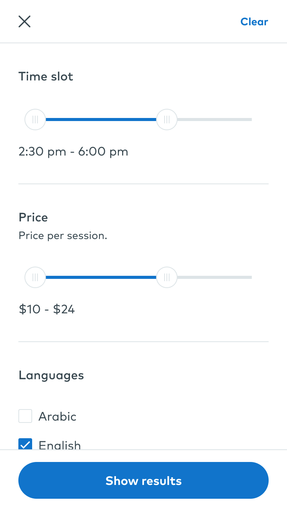

Une navigation simple




Voyageur en quête de sens au milieu des siens, les humains. Il recherche ce qu'il appelle ces "étranges étrangers" . Il aime voyager seul, sans plan, ne faisant confiance qu'à son intuition et à ses rencontres. En 2017, il atterit à Beyrouth, qui l'a transformé. Tout au long de son séjour, il a trouvé l'émulation, le chaos et la communauté dont il avait besoin pour produire et s'exprimer librement, sur les murs de la ville par le biais du street art ainsi que par la photographie. Intégré dans le milieu du graffiti, il photographie des artistes venant des 5 continents durant jam sessions, festivals ou dans les rues des villes où il passe. Il cherche à photographier pour la presse afin de comprendre et faire comprendre ce qui pousse l'humanité à agir ou à réagir. L'essence de son travail artistique est la dualité et le questionnement de la réalité. Il se considère comme quelqu'un d'émotionnellement binaire, sans nuances. Pour lui l'expression à travers l'art est une nécessité : ce n'est pas un passe-temps mais un exutoire. Ses techniques vont du collage à la photographie en passant par les médias mixtes.